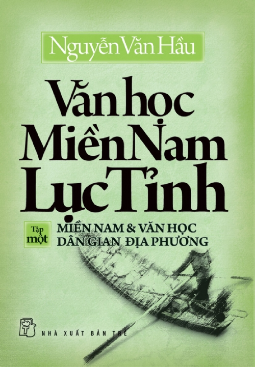
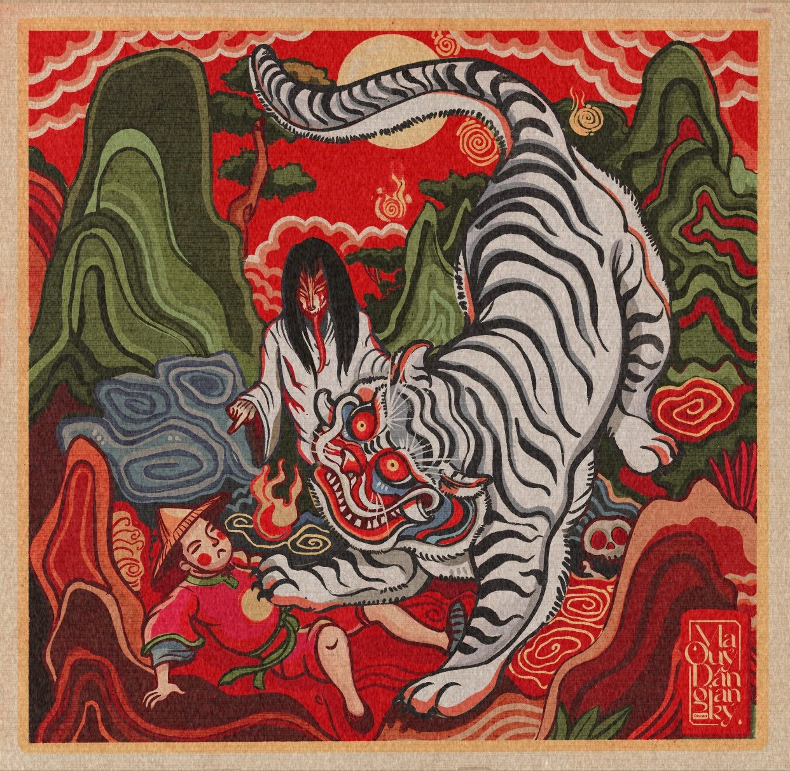
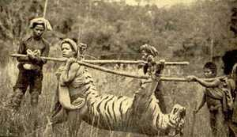
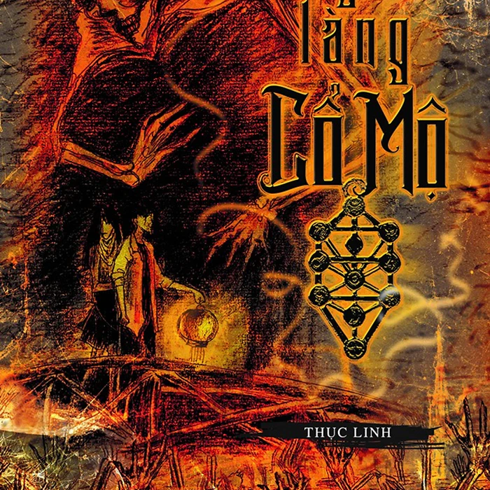
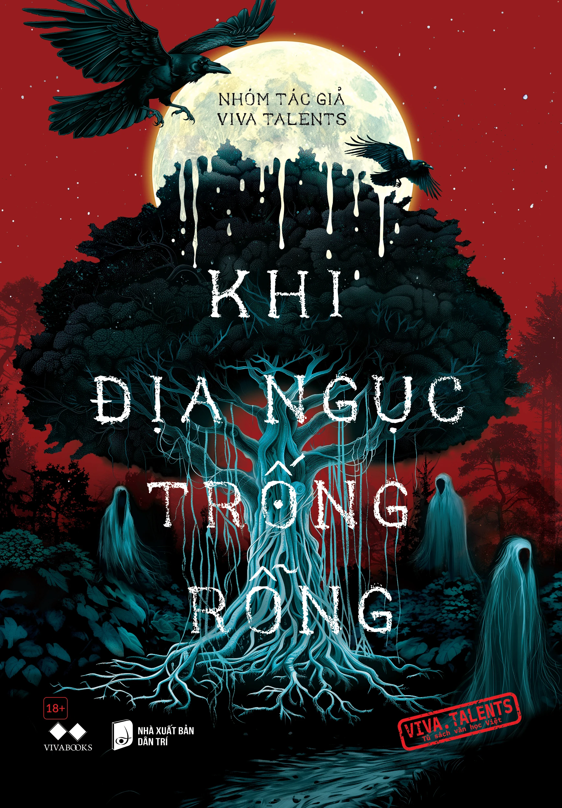
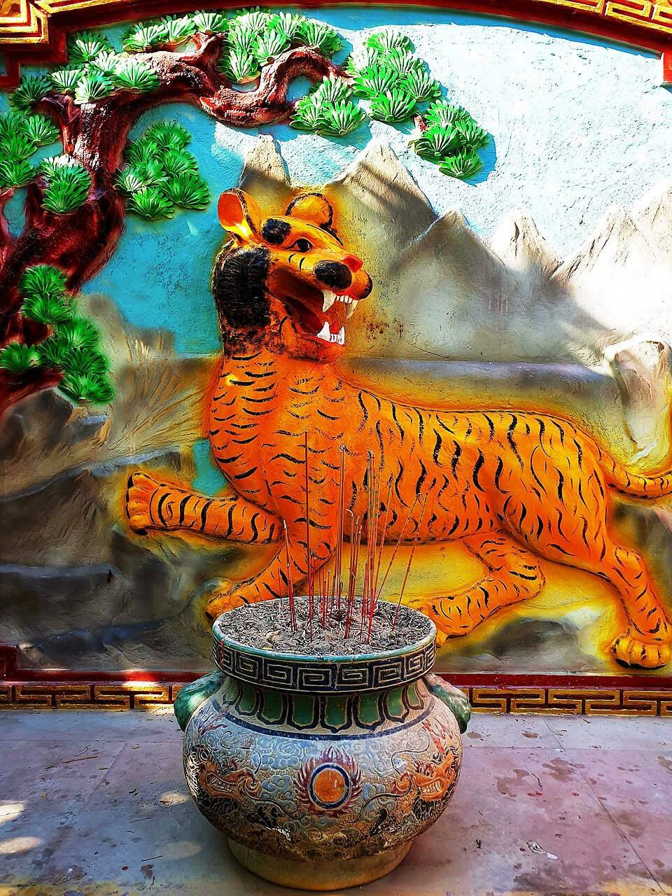
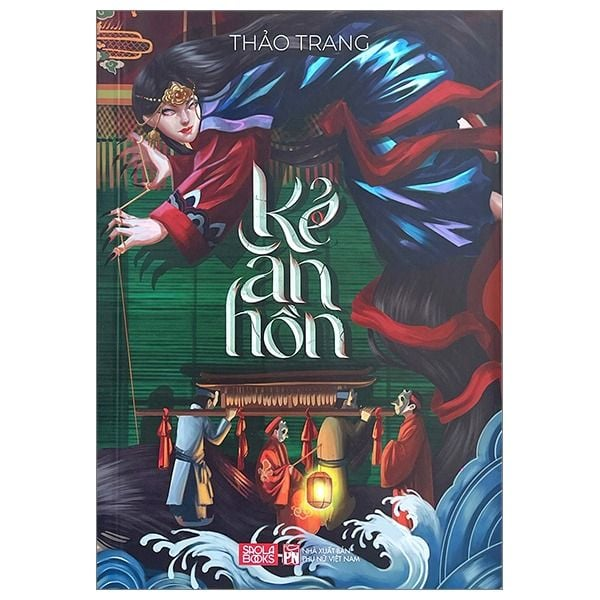

Thánh tông di thảo (Bản thảo còn sót lại thời Thánh Tông) không đề tên tác giả, không ghi năm biên soạn.

Theo truyền thuyết, tượng phật bà Chúa Xứ là một pho tượng cổ rất thiêng nằm trên đỉnh núi Sam từ rất lâu. Lịch sử về nguồn gốc pho tượng bà Chúa Xứ có nhiều giả thuyết chứa đựng nhiều điều bí ẩn còn lưu truyền đến ngày nay.

MIỀN NAM VÀ VĂN HỌC DÂN GIAN ĐỊA PHƯƠNG

Trời dần khuya, người nhà cũng bắt đầu ra kêu lũ trẻ ra về. Còn hàng trăm câu hỏi mà tụi nhỏ muốn biết thêm nhưng đòn roi của ba mẹ làm chúng còn hãi hơn là mấy con ma lúc này. Con tò he mang hình hài một cô gái áo trắng cưỡi hổ, được hình thành.

Chuyện “cọp ba móng” chọn thịt người làm món ăn “điểm tâm” hàng ngày của nó đã trở thành nỗi ám ảnh ghê rợn cho cán bộ, chiến sĩ và nhân dân trong căn cứ chiến khu D.

Những chi tiết rùng rợn, những tình huống gay cấn, căng thẳng, sợ hãi, góc nhìn trong cuộc của người đang phải chạy trốn hay đương đầu với những thế lực huyền bí ở Ngôi làng cổ mộ sẽ lôi cuốn bạn không ngừng. Từng câu chữ của Thục Linh sẽ dẫn dắt bạn đọc như lạc vào chính xứ sở u linh trong câu chuyện, trải nghiệm cảm giác ghê rợn một cách chân thực nhất như chính các nhân vật.

Cuốn sách bao gồm 7 truyện ngắn kể về những chuyện ma quái trong dân gian

Hổ được tôn thờ và là hình tượng phổ biến đầy ấn tượng trong đời sống dân gian của người Việt với tục thờ hổ hay thờ thần hổ ở nhiều vùng miền.

Kẻ Ăn Hồn - tiểu thuyết của nhà văn Thảo Trang - là tác phẩm thứ hai trong vũ trụ Tết Ở Làng Địa Ngục do tác giả xây dựng, thuộc thể loại tâm linh kỳ bí